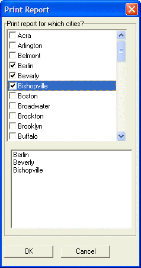

Using Xdialog to Filter a Report
The following example shows the use of a multi-select list box with embedded check boxes with the AlphaSports sample database. It allows the operator to select multiple values from the BILL_CITY field, then uses this information to filter the fields that will appear on a report. The Xdialog form looks like this.

Example
|
DIM SHARED a_selected[100] as C DIM SHARED varC_result as C DIM a_cities[temp_count] as C auto_list_cities = table.external_record_content_get("customer","Bill_city","Bill_city","unique_key_value()") temp_count = w_count(auto_list_cities,crlf()) a_cities.initialize(auto_list_cities) ok_button_label = "&OK" cancel_button_label = "&Cancel" varC_result = ui_dlg_box("Print Report",<<%dlg% {frame=1,2:Print report for which cities?} {region} [%M%.40,15cities^$$a_cities!select_cities]; {endregion}; {lf} {region} [.40,10cityname^#a_selected]; {endregion}; {region} {lf}; <*15=ok_button_label!OK> <15=cancel_button_label!CANCEL> {endregion}; %dlg%,<<%zz% if a_dlg_button="select_cities" then a_dlg_button="" a_selected.clear() a_selected.initialize(cities) end if %zz%) if varc_result = "OK" .and. cities <> "" then filter = alltrim(cities) filter = *for_each(x, "bill_city = " + quote(x), filter) filter = alltrim(filter) filter = stritran(filter, crlf(), " .or. ") report.preview("Customer List",filter) end if |